Comprehension passage - the questions below it refer to this
Consider following common data and answer the given subquestions:
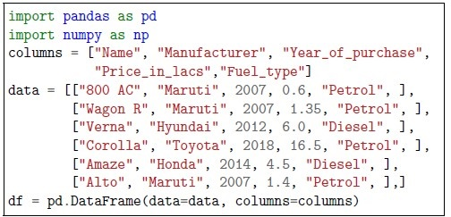
Consider following common data and answer the given subquestions:
Q1SA1 mark
What will be the output of the following code snippet?
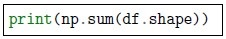
What will be the output of the following code snippet? Enter -1, if you think the above code snippet will generate an error.
Q2SA1 mark
What will be the output of the following code snippet?
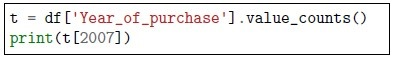
What will be the output of the following code snippet? Enter -1, if you think the above code snippet will generate an error.
Q3SA2 marks
What will be the output of the following code snippet?
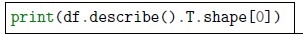
What will be the output of the following code snippet? Enter -1, if you think the above code snippet will generate an error.
Q4SA2 marks
What will be the output of the following code snippet?
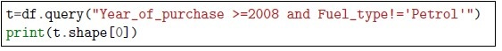
What will be the output of the following code snippet? Enter -1, if you think the above code snippet will generate an error.
Q5MSQ2 marksselect all that apply
Given the data, which of the following options will provide the same output?
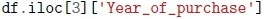
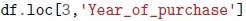
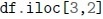
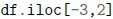
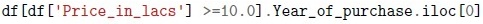
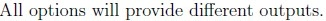
Q6MSQ2 marksselect all that apply
If you would like to see the most frequent car manufacturers in the dataset, which of the following can be used?
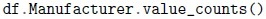
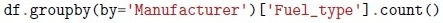
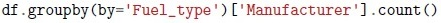
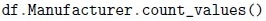
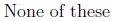
Q7MSQ2 marksselect all that apply
Which of the following choice(s) are correct ?
Null values cannot be interpreted by the model hence we need to handle themaccordingly.
Null values cannot be replaced because we can not manipulate the dataset.
We should let the sklearn or software automatically decide how to handledifferent kinds of missing values.
Different types of representation of missing values could be seen in thedataset.
Q8MSQ2 marksselect all that apply
Which of the following options are true about Pearson correlation matrix ?
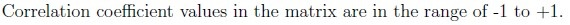
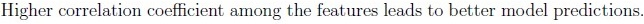
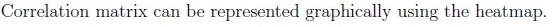
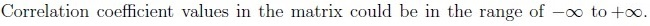
Q9MSQ3 marksselect all that apply
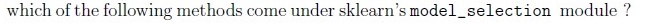
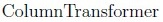
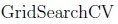
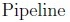
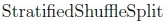
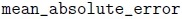
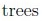
Q10MCQ2 marks
We need to preprocess the data before using it for model building due to which of the following reasons ?
Due to errors in data capture, data may contain outliers or missing values.
Different features may be at different scales.
Data contains non numerical features.
All of these
Comprehension passage - the questions below it refer to this
Consider following data and answer the given subquestions:
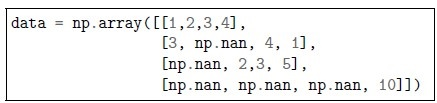
Consider following data and answer the given subquestions: Each row represents a data point. There are exactly 4 points. The index of points starts from 0 and ends at 3 (included).
Q11MCQ3 marks
Which of the following pairs have the highest euclidean distance? Note: take care of the missing values and adjust accordingly. The options refer to the indices of points.
1 and 2
0 and 2
1 and 3
2 and 3
0 and 1
There is a tie between two or more options.
None of these.
Q12MCQ2 marks
Which of the following pairs have the smallest euclidean distance? Note: take care of the missing values and adjust accordingly. The options refer to the indices of points.
1 and 2
0 and 2
1 and 3
2 and 3
0 and 1
There is a tie between two or more options.
None of these.
Comprehension passage - the questions below it refer to this
Consider following data and code snippet:
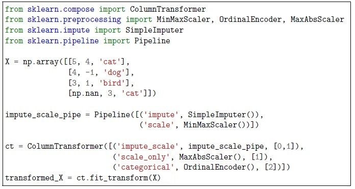
Consider following data and code snippet: Based on the above data, answer the given subquestions.
Q13SA2 marks
What will be the output of the following code snippet:
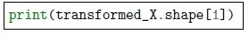
What will be the output of the following code snippet: Enter -1, if you think the above code snippet will generate an error.
Q14SA2 marks
What will be the output of the following code snippet:
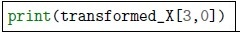
What will be the output of the following code snippet: Enter -1, if you think the above code snippet will generate an error.
Q15SA2 marks
What will be the output of the following code snippet:
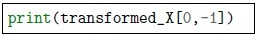
What will be the output of the following code snippet: Enter -1, if you think the above code snippet will generate an error.
Q16SA2 marks
What will be the output of the following code snippet:
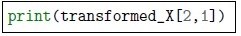
What will be the output of the following code snippet: Enter -1, if you think the above code snippet will generate an error.
Q17MSQ2 marksselect all that apply
Which of the following can be used to get the simpleimputer object?
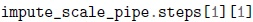
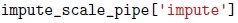
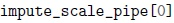
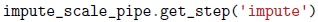
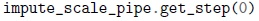
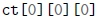
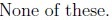
Comprehension passage - the questions below it refer to this
Go through the code snippet given below and answer the given subquestions.
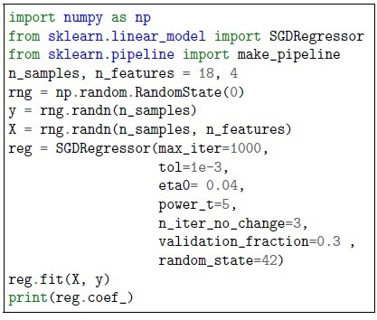
Go through the code snippet given below and answer the given subquestions.
Q18MCQ2 marks
Which of the following options will be the output of the given code?
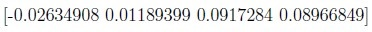
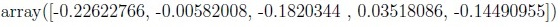
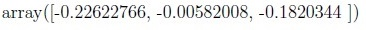
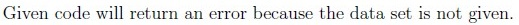
Q19MCQ2 marks
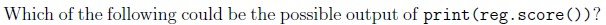
-0.528
1
0.528
Given code will return an error
Q20MCQ3 marks
Consider the following code:
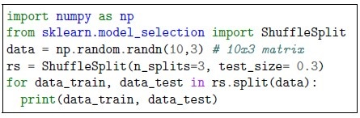
Consider the following code: Which of the following may be the correct output of the above code?:
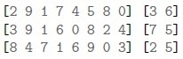
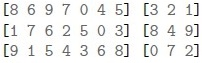
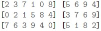
Q21MCQ3 marks
Consider the following code:
Consider the following code: Which of the following is more likely to be true?
Q22SA2 marks
What will be the output of the following code ?
What will be the output of the following code ?
Q23MCQ2 marks
It controls the learning rate of the stochastic regressor during training.
It determines the maximum number of iterations for the training process.
It defines the fraction of the validation set used for early stopping.
It specifies the tolerance level for early stopping based on the change in thevalidation error.
Q24MSQ2 marksselect all that apply
Consider the following code block and if needed make appropriate assumptions:
Consider the following code block and if needed make appropriate assumptions: Which of the following may be appropriate to be filled in the blank space value for scoring parameter?